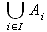

This page is outdated. You will be redirected to http://wiki.services.openoffice.org /wiki/Documentation/FAQ shortly. Use the new menu list on the right.
Documentation / User FAQ / Formula/Math / Previous-Next
I want to use a binary operator (like union or otimes) as a large operator (like int or sum). How can I do that?
You have to define the symbol you want to use as a user-defined symbol first. See FAQ #012 for instructions; most of the symbols used by Math are part of the StarMath font.
Let's say you have defined the union symbol as the user-defined symbol %union. You can then enter for example
oper%union from i in I A_i
in order to typeset the formula

Note: In build 633 this doesn't work if there is a space before %union (this is a bug in the parser).
Any user-defined symbol can be used as a large operator if it is preceded with oper as in the example.